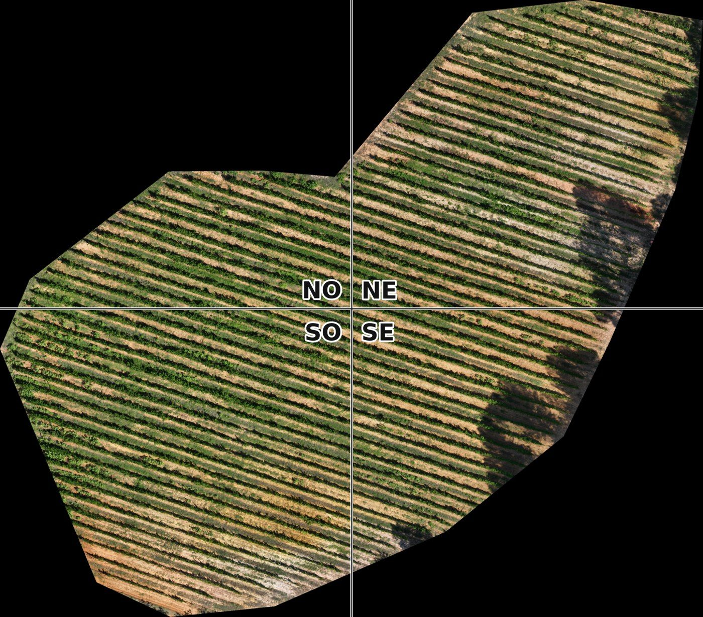
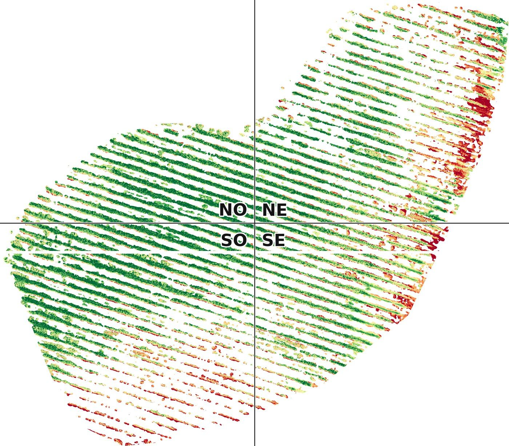
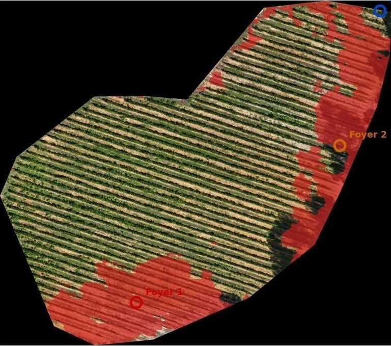
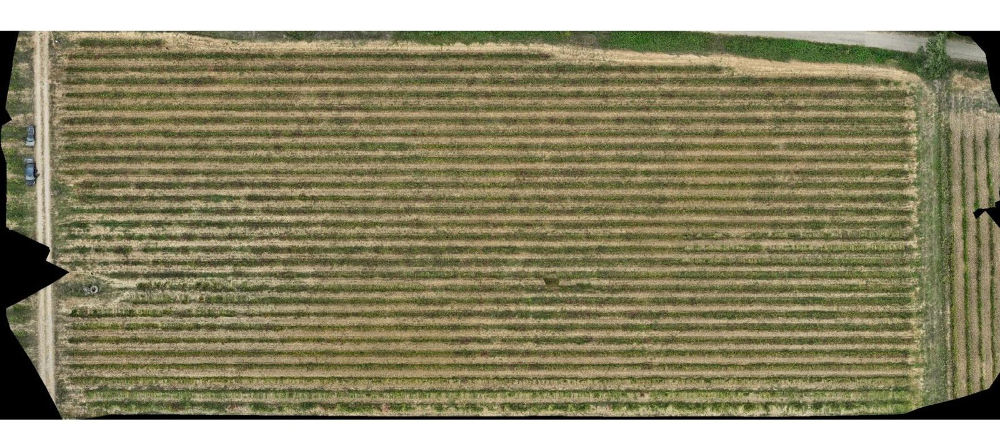
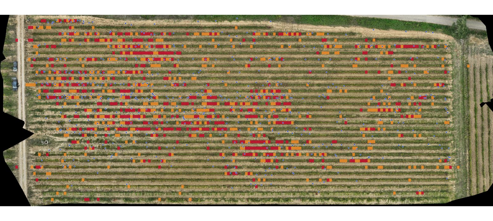
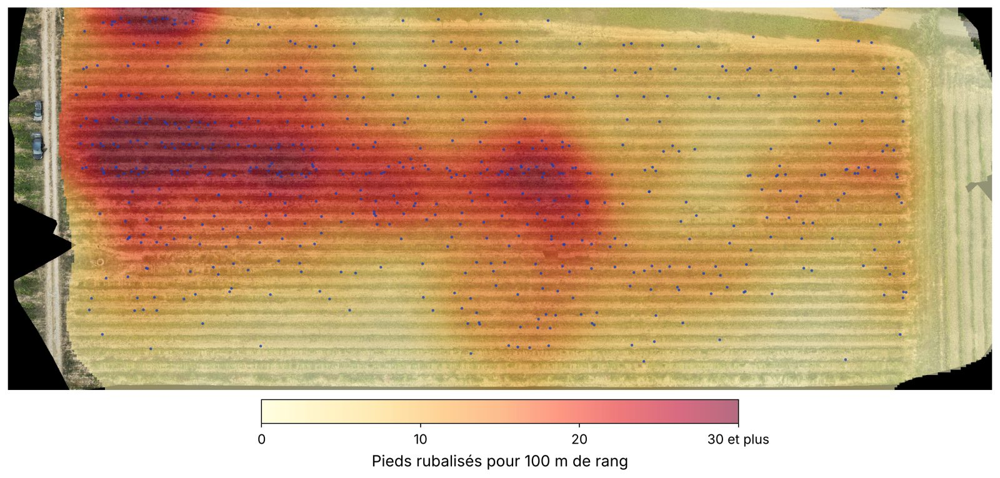
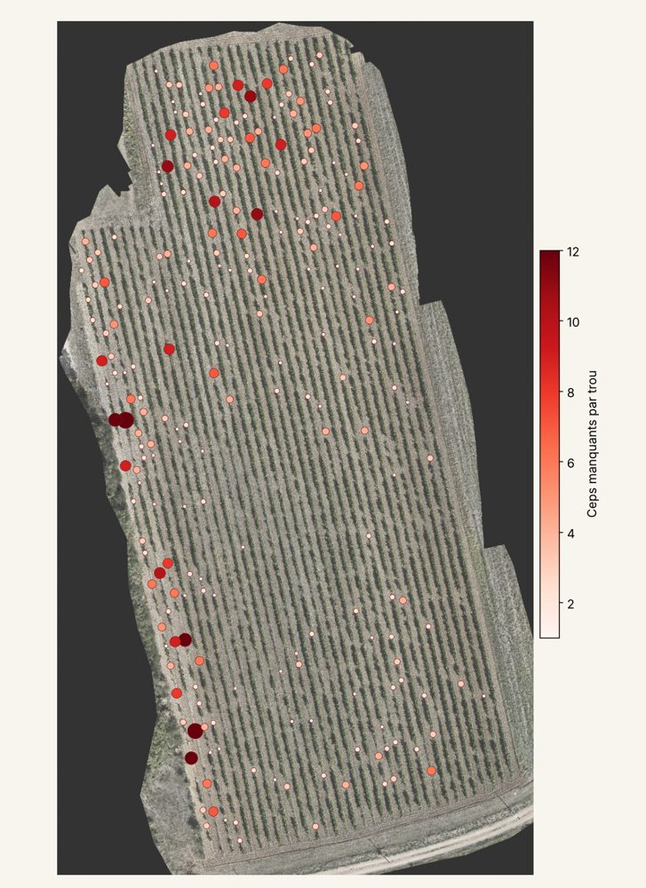

Résultats 2026
Ce que le drone a vu
dans les vignes.
Une première saison sur des vignes en production, pas en laboratoire. Résultats anonymisés, présentés par cépage. Nous montrons aussi ce qui n'a pas marché : c'est ce qui nous fait progresser.
Mildiou · Parcelle de Marsanne
Deux foyers retrouvés, sans indication
Le domaine signalait du mildiou, sans en donner la position. Le drone devait retrouver les zones seul.



Pour un vigneron, c'est la différence entre traiter deux foyers et traiter toute la parcelle.
Mildiou et oïdium · 16 parcelles
Le drone dit aussi où ne pas aller
Sur dix parcelles, aucun dysfonctionnement majeur détecté, ce qui concorde avec le terrain là où le domaine avait observé ses vignes. Sur les six autres, le drone a désigné des zones précises. Pour un vigneron qui manque de temps en été, savoir qu'une parcelle n'a pas besoin d'une tournée vaut autant qu'une alerte.
parcelles sans dysfonctionnement majeur
à aller voir en priorité, sur environ 21 ha survolés
Flavescence dorée · Parcelle de Marselan
La géographie de la maladie
29 rangs, 1,3 ha, une parcelle fortement atteinte : 584 ceps marqués au sol.



À ce stade, le drone retrouve où la maladie se concentre, pas encore chaque cep.
Le test à l'aveugle
Vingt alertes figées avant de connaître les ceps marqués
Sur un Marselan peu atteint, le foyer principal tombe dans un secteur désigné. Sur un Grenache blanc voisin, deux ceps isolés n'ont pas été vus. Trop peu pour conclure, assez pour cadrer la suite.

Ce que le drone ne voit pas encore
Un cep isolé, en début d'expression, reste majoritairement vert vu d'en haut : le drone ne le désigne pas. Un vol trop tôt le matin, soleil bas et ombres longues, brouille la mesure. Une seule saison ne suffit pas à régler tout cela.
En 2027, nous allons plus loin
Voler au bon moment
Mi-septembre, soleil haut.
Voler deux fois
Le cep malade rougit avant les autres.
Mieux pointer au sol
GPS au centimètre, pas au téléphone.
Des parcelles entre les deux
20 à 50 ceps, des foyers qui démarrent.